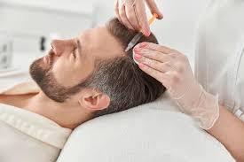

RECOMENDACIONES PARA TU TERAPIA CAPILAR
1. ANTES:
Evitar el uso de productos irritantes.
No aplicar tintes o procedimientos agresivos previos (al menos 72 horas).
Informar sobre medicamentos, alergias y antecedentes clínicos.
2. DESPÚES:
No lavar el cabello hasta pasadas 24-48 horas.
Evitar la exposición solar directa o al calor intenso.
Usar productos suaves, libres de sulfatos y parabenos.
Seguir la rutina indicada por el profesional para potenciar resultados.
OBJETIVOS PRINCIPALES
Prevenir o frenar la caída del cabello.
Estimular la regeneración folicular.
Reequilibrar las condiciones del cuero cabelludo (pH, secreción sebácea, oxigenación).
Mejorar la respuesta a tratamientos médicos como la implantología capilar o farmacoterapia oral.
BENEFICIOS A CORTO Y LARGO PLAZO
Mayor densidad, brillo y fuerza del cabello.
Control de condiciones como la caspa, la seborrea o la inflamación.
Mejora visible de la autoestima y bienestar emocional.
Potencial regenerador en casos de alopecia androgenética o difusa.
PREGUNTAS FRECUENTES
¿Cuánto tiempo tarda en verse resultados?
Generalmente, entre 4 y 8 semanas, dependiendo del tipo de tratamiento y nivel de afectación.
¿La terapia capilar sustituye el trasplante capilar?
No, pero puede ser una estrategia complementaria o preparatoria en muchos casos.
